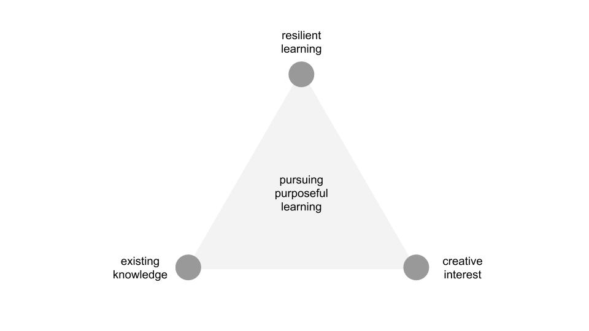

freewriting.
i was thinking out loud in the shower this morning and will try to capture those thoughts here.
i start with the desire to align my interests with my time-spent. i am interested in self-expression (particularly through words, sound and images), self-development, self-love, self-compassion, understanding emotions, undersetanding consciousness, mathematics, philosophy, psychology, neuroscience, systems, creating better civilizations, creating better social systems, computer science, data science/analysis, spirituality, physiology and holistic thinking. i have realized that the topics of machine learning and artificial intelligence live in the same ecosystem as these topics. i think that's why i keep returning to it as a field of study and why my recent dive has been enjoyable and has given me the chance to experience what i call (for now) pursuing purposeful learning.

science fiction is important to science because it expands the boundaries of existing knowledge. i also think of science fiction as subjective science or opinionated science, or something that captures the concept of exploring untested and unvetted inspirations related to an existing body of tested and vetted knowledge.
this train of thought began from feeling jealous of individuals who began pursuing purposeful learning from a very young age and ended with appreciation that i'm arriving into the orbit of my own now. i define the pursuit of purposeful learning as a consistent connection and sustainable dynamic between existing knowledge, creative interest and resilient learning. i've experienced success in connecting any two of these three, but rarely have i connected all three for a sustained period of time.
existing knowledge can also be referred to as "science", or any tested, vetted, concensual model of thinking.
creative interest is the combination of the desire to create something original (authentic self-expression) and an attraction toward something that feels exciting, joyous and inspiring (interest).
resilient learning is the combination of resilience to overcome challenges and the process of synthesizing new information with previous knowledge to produce an updated understanding of it.
i think arriving at the pursuit of purposeful learning eventually and naturally leads to mastery, of self, self-expression and something outside of self.